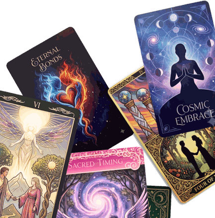

The Twin Flame edition — new for 2026
It's real
and so is your way through.

If you're on the twin flame journey, you already know the feeling: the recognition, the intensity, the separation, the silence that no one around you seems to understand. Your friends have run out of ways to listen. This app hasn't.
Remindfulness Twin Flame is a gentle companion for the inner work of the journey. It runs quietly in the background and sends beautiful reminders through your day: mantras and micro‑practices that call you out of the ache of waiting and back into presence, self‑love, and connection with your Source.
The twin flame journey is a spiritual one, not a romantic one, though there can be plenty of romance along the way. This app supports the understanding that the journey's true purpose is your own awakening: coming into union with your own soul first. The reminders are written for the one doing the conscious work of the connection, the Divine Feminine in any body, and they will meet you exactly where the journey has you today.
These reminders don't feed the obsession, the checking, the reading of signs. They lovingly turn you back toward the one person on this path you can actually heal: you.
Make it yours
Choose your alert sound, or none. Choose random timing and how many reminders you'd like, or a regular interval. Suspend the app while you sleep and it wakes with you. Write your own mantras, import a whole list at once, and back them up with a tap. A Help button on the Reminder screen links to a video technique that supports the practices.
Alert sounds named for the journey itself
- A Good Dream
- Almost Again
- Differences
- Hope
- It's All Okay
- Just Breathe
- My Heart
- New Resolution
- Now It Makes Sense
- Precious Moments
- Rescue Me
- Run Chase Run
- So Close
- State of Suspense
- Still Waiting
- Surrender
- Andean Flute
- Aum Chant
- Bells
- Birds
- Gong Bells
- Harp
- Kyoto Forest Bell
- Sushi Mystic
- Zen Garden
A note on notifications
For the best experience, allow notifications when the app asks. If you'd like reminders to stay on screen until you've seen them, go to Settings > Notifications > Remindfulness TF and choose the Persistent banner style. Opening a reminder from time to time also tells iOS you're using them, which keeps them flowing.
Twin Flame reminders by Patricia Dean, DF.
Please enjoy this edition of Remindfulness. It was created to help you return, throughout your day, to the present moment, and to yourself.
